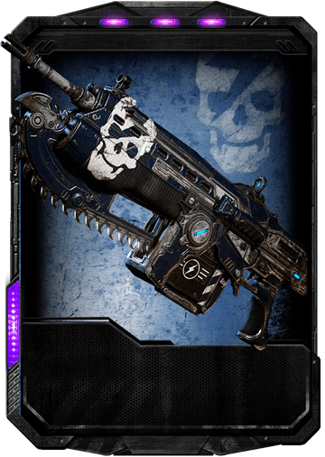
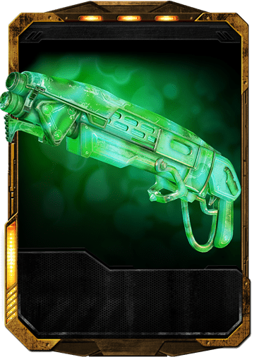
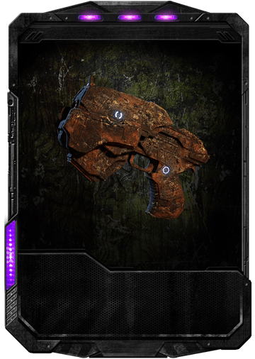

ARMAS PRINCIPALES
| 
|
RIFLE DE ASALTO MK1 LANCER
Es el arma característica del Ejercito CGO. Este rifle de asalto equipado con motosierra ha sido de gran ayuda en la guerra librada contra los Locust. Fue introducida un año después del Día-E, siendo el reemplazo del Rifle de Asalto Mk1 Lancer.
El Lancer ha estado en acción durante la Guerra Locust e Invasión Lambent.
Ahora, gracias a un cargador más amplio posee el 20% más de munición, el Lancer es más mortal que nunca. Otra ventaja que posee, es que el Lancer gana el mayor número de daño que una recarga activa perfecta le puede ofrecer a cualquier arma.
El Lancer ofrece una mezcla casi perfecta de potencia, precisión y rango; además de una motosierra de ataque cuerpo a cuerpo, que la convierte en la mejor opción en múltiples situaciones.
|
ESCOPETA GNASHER
La Escopeta Gnasher es una potente escopeta ideal para el combate cercano y aunque es muy inferior en comparación al poder de otras variantes de escopeta como la Escopeta Recortada lo compensa con su capacidad de almacenamiento de proyectiles y cadencia mayor.
Como una escopeta, la Gnasher dispara rondas de perdigones de calibre 12, con nueve balines por proyectil, lo que resultó en una rociada de disparo en una trayectoria en forma de cono; Debido a esto, la Gnasher no era particularmente difícil de apuntar y era capaz de derribar objetivos del tamaño de un hombre en un solo disparo. La Gnasher también tiene un rango largo y letal para una escopeta, capaz de infligir (aunque mínimo) daño a los objetivos hasta a 8 metros de distancia, pero el disparo irá más lejos.

| |
| 
|
PISTOLA DE CAÑON CORTO MX8
La Pistola de Cañón Corto MX8 es un arma complementaria semiautomática estándar, con un cargador de 12 rondas y una visión de zoom de largo alcance para una mayor precisión. No es una pistola muy potente, pero su precisión y su facilidad de uso la convierten en una valiosa arma de apoyo.
Esta pistola está diseñada para distancias medias y un poco largas, ya que posee también la habilidad del zoom. Es de gran ayuda cuando escasea la munición y no tenemos otra arma al alcance. Sirve de mucho para dispararle a enemigos que se mueven lentamente o que son muy débiles.
|